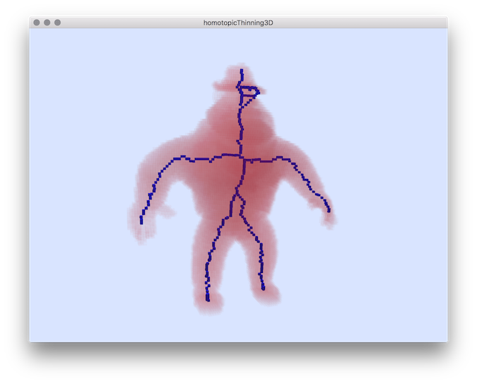

Applies an homotopic thinning of a 3d image file (vol,longvol,pgm3d...) with 3D viewer.
Usage: homotopicThinning3d [options] –input <3dImageFileName> {vol,longvol,pgm3d...}
Allowed options are :
-h [ --help ] display this message.
-i [ --input ] arg Input volumetric file (.vol, .pgm3d or p3d)
-m [ --min ] arg (=0) Minimum (excluded) value for threshold.
-M [ --max ] arg (=255) Maximum (included) value for threshold.
-e [ --exportSDP ] arg Export the resulting set of points in a simple
(sequence of discrete point (sdp)).
--fixedPoints arg defines the coordinates of points which should not
be removed.
-s [ --fixedPointSDP ] arg use fixed points from a file.
Example:
Usage by forcing point to be left by the thinning:
$ homotopicThinning3D --input ${
DGtal}/examples/samples/Al.100.vol --fixedPoints 56 35 5 56 61 5 57 91 38 58 8 38 45 50 97
You should obtain such a result:

Resulting visualization.
- See also
- homotopicThinning3D.cpp